- Document
- Paris, BnF, ms. français 4700, no. 38, f. 72r (Gallica
btv1b90582908, view 84). The minute (draft) of a letter of Ludovico Gonzaga, Duke of Nevers, to the Oratorian Tommaso Bozio in Rome, La Guierche, 1 May 1593, in Italian. Two passages are in figures. - Not ours
- G. Cassiani described this minute in 2014. He identified the addressee and gave the context. He gives no reading of the cipher passages. See the credit below.
- New
- This is the first reading known to us of the two cipher passages of a minute that G. Cassiani described in 2014; the key is rebuilt from the text. We did not find this key on a key sheet.
- State
- 148 of 149 groups have a value by the key. One mark is not read. The first words of passage 1 are not sure: the page does not have "se 'l papa".
- Review
- 14 October 2026. A review panel of three skeptics and a skeptic of another model family checked the page. Every word that the page prints from cipher matched the groups by the key. The corrections are listed in the README, under "History of our own statements". The subject of passage 1 is not resolved.
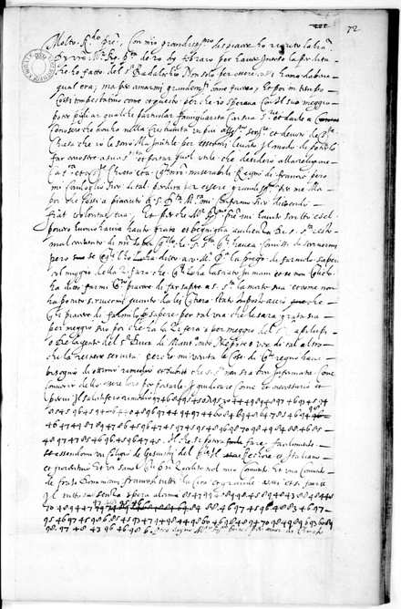
cleartext_f72r.txt: a reading from this small image, not an edition. Source: gallica.bnf.fr / BnF.The key
The cipher text is a row of figures with no gaps between the letters. A figure 4, 8 or 9 takes the next figure: the pair is one letter. A figure 3, 6 or 7 stands alone and is a vowel. A figure 0 stands alone and is a null. u and v are one letter.
| 3 | 4 | 5 | 6 | 7 | 8 | 9 | |
|---|---|---|---|---|---|---|---|
| 4x | 43 c 2 | 44 u 5 | 45 a 13 | 46 e 13 | 47 i 9 | 48 e 12 | 49 o 4 |
| 8x | 83 b 1 | 84 c 4 | 85 d 6 | 86 f 2 | 87 g 1 | 88 h 3 | 89 l 6 |
| 9x | 93 m 3 | 94 n 8 | 95 p 5 | 96 r 8 | 97 s 11 | 98 t 11 | 99 q 1 |
The four single figures:
| 3 | 6 | 7 | 0 |
|---|---|---|---|
| 3 a 1 | 6 o 7 | 7 u 3 | 0 null 9 |
In each box: the group, its letter, and how many times it stands in the two passages. The consonants b to t stand in the order of the alphabet, in the rows 8x and 9x. Five letters have two values: a (45, 3), e (46, 48), o (49, 6), u (44, 7), c (84, 43). The cipher has no figures for whole words and no sign for a doubled letter.
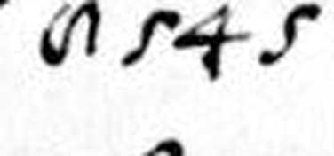
The lines have no closed 8 and no 5 with a flat bar. With these two values the pairs make a regular table. So the two values are inferred from the system. The key with the words that fix each value: key.tsv. The decoder: decode.py.
The two passages, group by group
Each image shows one cipher line, or one half of it. Under the image, each box holds one group of the settled transcription and its value by the key. The line under a group of boxes gives the word; the word division is ours. A hyphen marks a word that goes on in the next image. A box in red: the value is what the key gives, and the sense asks for another letter.
Passage 1
It follows the clear words "il salutifero rimedio".
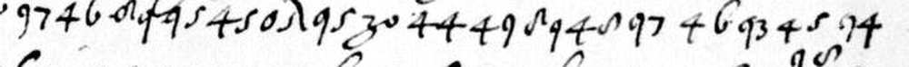
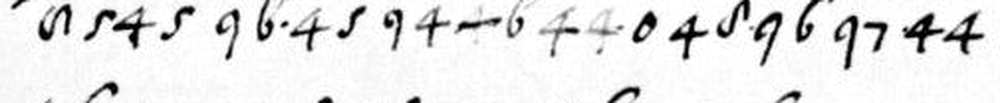
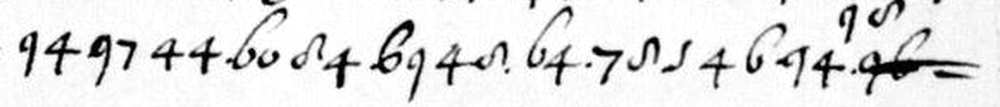
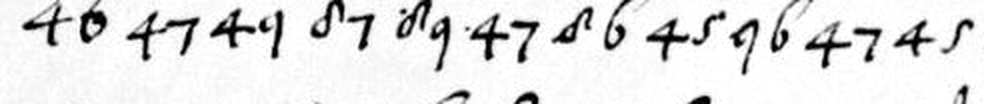
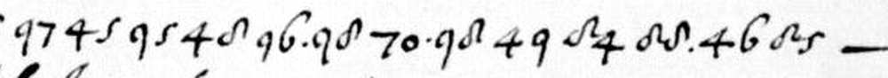
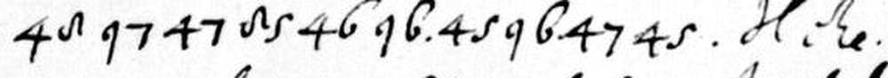
se c pa·[?]pa(?)· uolese mandar a neu·ers un suo· confidente io gli faria saper tu·to che desideraria
se c pa[?]pa(?) volesse mandar a Nevers un suo confidente, io gli faria saper tutto che desideraria.
if [not resolved; perhaps the Pope] would send to Nevers a confidant of his, I would let him know all that he would wish.
First the letters as the cipher gives them (a raised dot = the null 0; [?] = a mark that is not read). Then a normalised Italian. Then English. The page does not have "se 'l papa". The third group is 84, and its value is c. "se 'l papa" (if the Pope) is the probable sense: it needs 89 in the place of 84. The clear text before the passage speaks of "sua Santità". But "papa" rests on a mark that is not read and on the value 3 = a, which has one witness. So the English does not make the Pope the subject.
Passage 2
It follows the clear words "senza spesa alcuna".
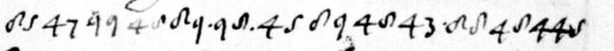
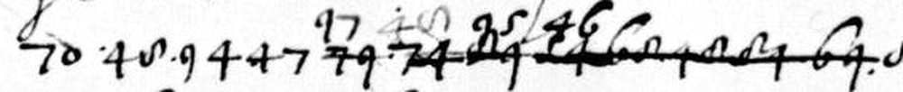
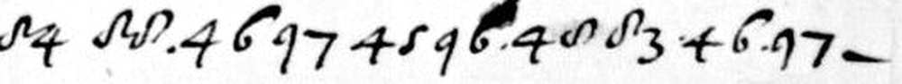
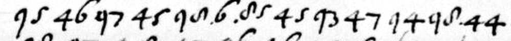
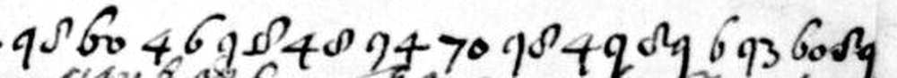
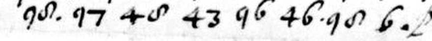
di qel tale che u·enise peche sarebe spesato da mi n tuto· e tenu·tolo mo·lt secreto
di quel tale che venisse, pe[r]ché sarebbe spesato da me in tutto, e tenutolo molt[o] secreto.
for the man who would come, because I would pay all his costs, and he would be kept very secret.
"qel" stands for "quel", and "peche" for "perché". One i serves for "mi" and "in". The o of "molto" is not written. In line 2 the writer struck a first draft and wrote 97 48 95 46 above it. The struck signs are not read.
The reading with its clear context: reading.md.
How sure
| Measure | Value |
|---|---|
| Groups in the two passages | 149: 139 letters, 9 nulls, 1 mark that is not read |
| Signs that are the same in the two transcription passes (the second one blind) | 288 of 298 (96.6 %) |
| Letter groups of passage 2 that the key of passage 1 reads | 61 of 65 (94 %) |
| Four-letter score of our key | -4.23 (first run: -4.45). Real Italian of this length: median -3.93, worst -4.28 |
| 5,000 keys with shuffled letter values | mean -6.60, best -5.49; ours is 9.9 sd above the mean (first run: 9.4 sd) |
| Our key on 5,000 shuffled orders of the groups | mean -5.99, best -5.41; ours is 11.6 sd above the mean (first run: 10.4 sd) |
| 5,000 shuffled keys of passage 1 on passage 2 | mean -6.33, best -4.81; ours is 5.9 sd above the mean (first run: 5.5 sd) |
| A free solver, which knows nothing of the key, on five shuffled orders | -4.40 to -4.68 |
| Mechanical score (panel, 14 October 2026): the letters that stand inside Italian words of 3 letters or more | 72.7 % of 139 letters; best of 400 controls 49.6 %; clear Italian of the page 87.8 % (median). A free solver reaches 84.9 to 92.8 % on shuffled orders, so at this length the score shows only that the key is not random |
| The key of the minute alone on the sheet f. 80r, which it did not see (held out) | 57.4 % of 552 letters; best of 400 controls 27.0 %; clear Italian of the same writer 83.9 % |
The score is the mean log10 probability of the groups of four letters, on a table made from Italian prose.
- A four-letter score alone proves nothing at this length. A free solver knows nothing of our key. On texts in a shuffled order it makes strings that are not Italian, and they score almost as well as real Italian. On the true order it scores better than our reading. So the score does not prove the reading. The proof is in controls 1 to 6 of the README together.
- The two runs do not give the same numbers. The first run used a table of four-letter groups that we did not keep. Its scores are lower for every text, for real Italian too. We do not know why. The column of the first run cannot be rerun from the repository. The second run uses the script of this folder. Both runs give the same result.
- The Italian text for the table is in the folder since 14 October 2026:
evidence/it_letters.txt, 2,568,254 letters of six public-domain Italian texts of Project Gutenberg (evidence/make_corpus.pynames them and rebuilds the file).python3 control.py evidence/it_letters.txtgives the column of the second run exactly (evidence/control_output.txt). - The samples of real Italian come from the same text as the table. This makes their scores a little too good.
- In the first run, the free solver gave nonsense on the true order. In the second run, its text has the letter of our reading in 106 of 139 places, and the other places are not Italian. This is one run with one seed. We do not count it as a control.
- The reading does not come from a solver. It came from the counts, from a trial of the order of the alphabet, and then from the words. A first solver with one letter for each group did not find the text.
The passes. The first pass came before any decoding. The second pass was blind: a separate agent had the names of the signs and the line images only. Ten signs differ. Two of them are only the order of one correction. The others are in three places, and both passes had marked each of these places as doubtful. The passes: pass1.txt and pass2_blind.txt.
The key of passage 1 on passage 2. The values that passage 1 fixes give this text for passage 2: di?eltale?heuenisepechesare?espesatodamintutoetenutolomoltse?reto. The three groups that are new in passage 2 (43, 83, 99) give c, b and q in "che", "sarebe" and "qel".
The sense and the structure. Each passage completes the clear sentence in which it stands. Thirteen consonants stand in the order of the alphabet. We tried this order as a first guess, so it is not a fully separate control. But a word then confirms each of the thirteen letters. The work log: evidence/worklog.md.
What is not resolved
- Passage 1, line 1, third group. The page has 84 = c. Both passes read 84, and three images show it. "se 'l papa" needs 89 = l. So "se 'l papa" is not what is written. Either the writer made a slip, or "c" has a meaning that we do not see.
- Passage 1, line 1, the mark after the first 0. We cannot read it. It is not the writer's 8, 5 or 1. It stands between "pa·" and "pa·".
- Passage 1, line 1, the figure before the second 0. It is a 3 with a large tail loop, or a 2 in the form of a z. We read 3 = a ("papa"). The value 3 = a has this one witness.
- Passage 2, line 1, third group. It is 99, and the first 9 is written over another figure. Its value q rests on one word: "di qel tale".
- Passage 2, line 2, the correction. The writer struck some signs and wrote 97 48 95 46 above them ("sepe"). The 48 is faint. The 95 is a blotted sign and a clear 5: we read it in part from the sense.
- The struck first draft is not read. It has about 15 signs, in line 2 of passage 2. It gives no control. Two short struck places fit the key: 96 (r) corrected to 98 (t) in "confident", and a struck 44 (u) that the writer wrote again as 7 0.
- Four values have one witness each: 83 = b ("sarebe"), 87 = g ("gli"), 99 = q ("qel"), 3 = a ("papa"). The order of the alphabet supports 83 and 87. Nothing else supports 99 and 3.
- Faint signs. Four groups are in faint ink: two in "neuers", one in "qel", and the 48 of the correction in passage 2, line 2. The text needs them, so we do not take them as deletions.
- The two odd figures (8 and 5) are read by the system, not by a clear model of the hand.
- The dots. Dots stand beside some figures. We take them as rests of the pen. They do not divide words in a regular way.
- The images are small. Each strip is 610 pixels wide and shows about half of a line. A second set of strips of the same scan gave no more detail. The region of one new strip was wrong: it ends just before the mark and the figure of doubts 2 and 3.
- The clear text is one pass from a small image. Words with (?) are not sure. The image of the page ends at "per amor de Christo".
- The key is not on a key sheet that we know. See "Open work" and "Earlier work" in the README.
- The numbers of the first run of the controls could not be repeated exactly (see "The controls" in the README).
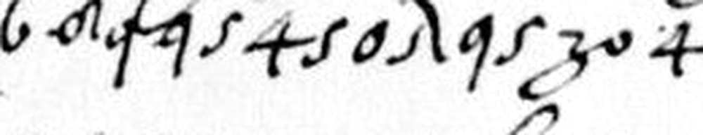
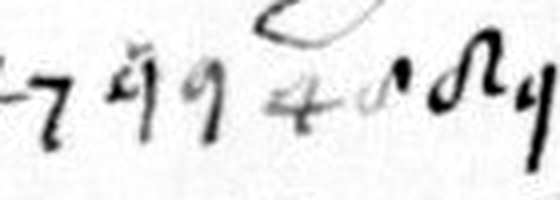
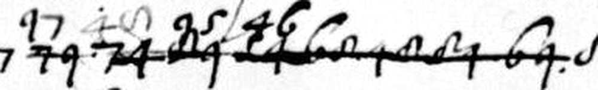
Open work: the cipher text from Rome
The minute answers a packet from Rome. One leaf of that packet is in cipher: BnF fr. 4687, f. 89r. By Cassiani, it is the cipher text of Vincenzo Badalocchio, copied by Bozio. We have not read it. It follows neither the old cipher of 1592 nor the cipher of the minute: it has the figures 0 to 7 only, in pairs, and capital signs with two figures after them. It may be a third system or a working notation. We tried both keys, and no Italian word comes out.
Credits
G. Cassiani's work on this minute:
- He described this minute in 2014: G. Cassiani, "«Il nostro re, e sua christianissima maestà». Novità su Tommaso Bozio dinanzi all'istanza di riconciliazione di Enrico IV", Rivista di storia della Chiesa in Italia 68 (2014), pp. 387-409, at pp. 394-395 (p. 410 is the English abstract). The article is for sale on the site of the publisher, Vita e Pensiero, and it is on the author's page at academia.edu.
- He identified the addressee: Tommaso Bozio.
- He gave the context: the reconciliation of Henri IV, and the death of Nevers's agent Vincenzo Badalocchio on 19 February 1593.
- He gives the content of the clear text, with quotations from the leaf.
- Of the cipher he wrote that the Duke "volle crittografare i passaggi più delicati della sua missiva". He gives no reading of them. On 14 October 2026 we searched the full text of the article (pp. 387-410) for the words of cipher (cifra, zifera, crittograf-, decifr-, codice) and for runs of figures. He describes the cipher: the key that Bozio kept, the cipher text of BnF fr. 4687 f. 89r, and the Duke's wish to put the delicate passages of the minute in cipher. He quotes no figure of a cipher and no reading of cipher.
- His article of 2016 (pp. 241-258) lists the minute among the letters of Bozio and Nevers (footnote 3). It does not speak of the cipher of the minute. In its full text the words "cifra" and "cifrata" stand only in a figurative sense.
- Gennaro Cassiani described the minute, identified Tommaso Bozio as the addressee, and gave the context (2014, 2016).
- Satoshi Tomokiyo described the cipher keys of the Duke of Nevers in BnF fr. 3995, among them no. 56, which this project reads as Badalocchio's older key (Cryptiana, "Catalogue of Ciphers (Mainly Related to Duke of Nevers) in BnF fr.3995").
- Daniel Bourdeau listed fr. 4700 nos. 38-46 as letters to do.
- Bibliothèque nationale de France / Gallica provides the page images.
- The work was done by a model: Claude, by Anthropic, running as Claude Code with subagents. Paolo Rosson directed it. No palaeographer has checked it.
What was searched for an earlier reading, and what was not opened: README.md. Folder: nevers-1593.